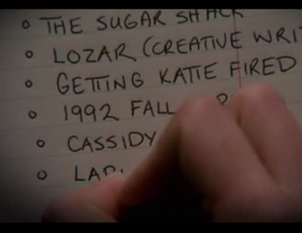

Erica
As humans, we all have regrets. In some way or another we’ve been through situations or experiences where we wish to go back time and fix things, respond differently, or behave in a certain way. Erica is human too and as everyone she has a list of millions, maybe trillions of regrets. One evening while Erica was walking home after a long tiring day at work. She was mumbling and grumbling, complaining about how things have been going ... questioning and criticizing life, people, and most importantly, herself. Out of nowhere Dr. Tom popped out in front of Erica and said: “In times of difficulty lies an opportunity” Albert Einstein. Doctor Tom is here. How can I help you Erica! How can we be sure that we’re making a choice … that we won’t regret? Erica responded. Dr. Tom: when you know yourself, it’s only yourself that you have to answer to … for … Here’s a piece of paper, write down your regrets and let me see what my therapy can do.
TAKE THE PAPER?
NO
She left him with the paper and continued way home thinking to herself how would things have been if she did write her regrets. Now that she can’t go back to him … she added one more regret to her list.


YES
Regrets
Erica wrote down a list of all the regrets she could remember at that moment and said: what can a therapy session do with all of these regrets I struggled to suppress my whole life. Doctor Tom held the paper and started reading through then went back to the first regret on the list, hmmm let me see … tell me why you listed this on top of your regrets. Once Erica started telling the story behind that regret she nod-off and went back in time where it all began. Ben is Erica’s childhood best friend, with whom she spent almost every moment of her life. They went through thick and thin and still stick together. Ben and Erica are not only best friends but also workmates, more precisely, counterparts. However, this week things haven’t been going smoothly; Ben still misses between their friendship and working relationship. Erica started regretting the idea of her working with Ben at the same place and covering up on him not only for coming late but also for forging some paper in favor of other friends. Earlier this morning, when Erica went in to the office Ben rushed out to hide some documents that he defiantly didn’t want Erica to see. Later when he went to bring the usual coffee Erica started wondering what might the documents be that Ben was so worried about. This is when the voice of Doctor Tom comes in the back of Erica’s mind. Dr. Tom: Hello Erica, I hope you enjoy your first therapy … Well, this is how things will go. You’re allowed to either change the situation and pretend it never occurred or you have the option to behave differently. Remember you only have one chance so use it wisely.
Erica was so excited to try this one of a kind therapy and had to make her first decision now!
Be late and never see Ben hiding documents
Erica went back in time and went into the office half an hour late feeling happy and never seen Ben doing what he already has done. It was only few minutes when the manager walked in the office feeling angry and telling Erica how disappointed he is in her for not only coming late but also for not telling him about the forged paper he has just received from Ben. Erica who thought that she finally saved the day, hasn’t thought of what worse could happen! Now that she consumed the only chance she had; she felt even worse for not being able to fix things and avoid regretting them.
Erica went back to present and seen Dr. Tom standing still and smiling to her and asking whether she learned the lesson!
Learned the lesson
Erica smiled back to Dr. Tom and said, I never thought that only one session could do wonder. I did realize that one must learn to be who they are and learn to resign with good grace what they are not! By that I mean the way I responded was the best possible and suitable for that situation though it didn’t end up great. This way is still better than how it would end up if I responded differently. Regret is a nature that we can’t overcome but we still can embrace and learn from with a hope for better experiences.
Didn’t learn the lesson
Doctor Tom seen Erica’s frowning face and realized that she didn’t learn her lesson and that maybe she needs more sessions in order to understand the moral of the story by her own.
This is not the end, we still have a long list to go through. Are you willing to continue this mission Erica?
Yes
Erica welcomed the idea and was willing to try more in order to learn how to deal with the regrets she already has and the ones she would defiantly have in the future. Doctor Tom was impressed with Erica’s determination and promised her that she soon will figure it all out and thank him for his help. But now Erica, you only have one chance per day. So, till tomorrow I believe that you need to be prepared.
No
Erica refused to continue this and preferred to thank Doctor Tom and leave. Since then she always thought to herself how would things have been if she did try one more time. Now that she can’t go back to him … she added one more regret to her list.
Ask Ben why he is acting weird!
Well, this is how Erica responded at the first place, however it did that after being angry with him and checking the paper to realize that Ben was forging a paper that must be signed by the upper management. Now that Erica has the chance to ask Ben before even seeing the paper hoping that he answers her and be honest with her and himself. Erica: What are you hiding let me see! Ben: Why are you even asking me! Erica who just got angrier and couldn’t control her temper: I know you’re forging something as usual but you shouldn’t hide things from me! This is illegal and I just can’t cover up on you anymore! The manager was passing by the door when he heard Erica shouting, and rushed into the office to tell Erica how disappointed he is in her for what he has just heard and that she will be under probation for the next six months. Now that she consumed the only chance she had; she felt even worse for losing her friend and most probably her job; and of course, for not being able to fix things and avoid regretting them.
Erica went back to present and seen Dr. Tom standing still and smiling to her and asking whether she learned the lesson!
Learned the lesson
Erica smiled back to Dr. Tom and said, I never thought that only one session could do wonder. I did realize that one must learn to be who they are and learn to resign with good grace what they are not! By that I mean the way I responded was the best possible and suitable for that situation though it didn’t end up great. This way is still better than how it would end up if I responded differently. Regret is a nature that we can’t overcome but we still can embrace and learn from with a hope for better experiences.
Didn’t learn the lesson
Doctor Tom seen Erica’s frowning face and realized that she didn’t learn her lesson and that maybe she needs more sessions in order to understand the moral of the story by her own.
This is not the end, we still have a long list to go through. Are you willing to continue this mission Erica?
Yes
Erica welcomed the idea and was willing to try more in order to learn how to deal with the regrets she already has and the ones she would defiantly have in the future. Doctor Tom was impressed with Erica’s determination and promised her that she soon will figure it all out and thank him for his help. But now Erica, you only have one chance per day. So, till tomorrow I believe that you need to be prepared.
No
Erica refused to continue this and preferred to thank Doctor Tom and leave. Since then she always thought to herself how would things have been if she did try one more time. Now that she can’t go back to him … she added one more regret to her list.